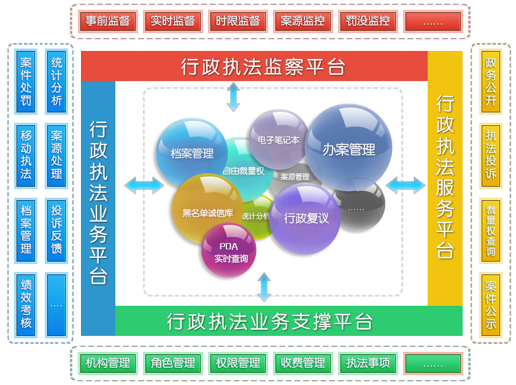

浪潮行政执法解决方案
方案概述
行政执法自由裁量权幅度过大、同案不同罚等问题一直是老百姓反映强烈的焦点问题。浪潮行政执法解决方案紧紧围绕各行政执法部门日常执法和监管的特殊性，建立统一行政执法平台，实现行政执法权力运行管理规范化、信息化、公开化和监督实时化，促进行政执法权依法、规范、合理行使，进一步提高行政执法水平，加快建设富强文明和谐的现代化国际城市营造良好的发展环境。
方案架构
浪潮行政执法解决方案从体系上分为行政执法业务平台、行政执法服务平台、行政执法监察平台、行政执法业务支撑平台四部分组成。

方案价值
全程网上办案：满足各执法部门需要，全面兼容现场执法和非现场执法模式，按照实际案件办理过程，覆盖各执法阶段每项程序标准和要求；智能裁量：根据案件所属情况，执法人员只需输入基本情况，系统根据自由裁量权标准进行自动预判，选择最佳的依据和基准；综合分析：通过强大的报表设计工具可以随意配置您想要的报表,提供了高效的报表设计方案、强大的报表展现能力、灵活的部署机制，并且具备强有力的填报功能；三级联动：实现省、市、县三级业务数据联动，支持分布式和集中式部署模式，业务数据实时无缝交换；全程监察：全面监管行政执法中的政务公开、案源监控、办理时限、执法过程、执法行为、处罚结果、服务质量反馈和投诉举报，及时发现问题、解决问题和反馈问题；资源整合：针对各类执法异构系统进行统一接入，提供接入API标准、界面集成、服务集成、数据集成。